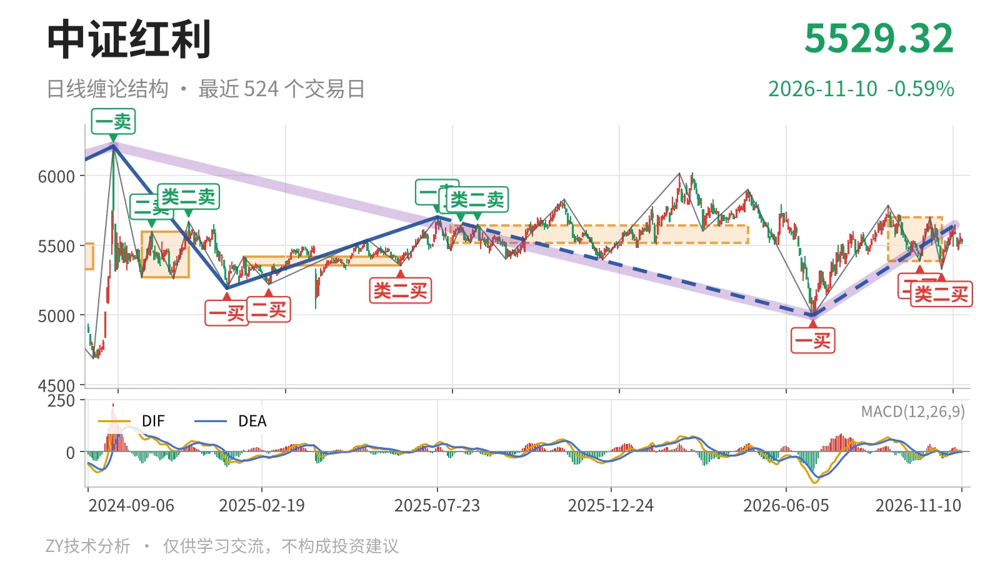
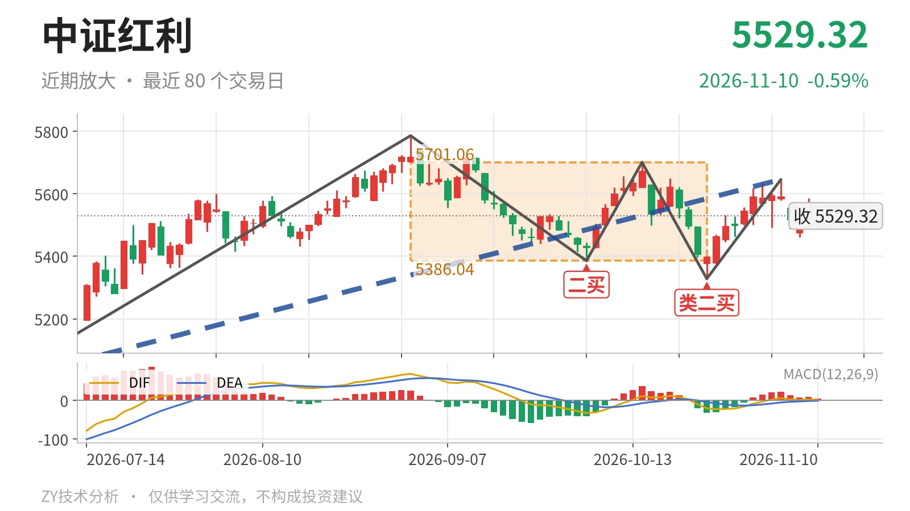

中证红利｜回踩中枢内，5646点承压

最近日线中枢 5386.04—5701.06点，收盘位于中枢之内
一句话：上涨线段还在延续，价格回到中枢内，结构中性
📐 走势结构：日线上涨线段还在延续，更大级别仍受前高约束
当前日线结构处于6月30日以来的上涨线段中，该线段从4995.49点走到11月4日高点5646.01点，还没有结束。日线线段内部有5笔构成，最后一笔10月23日至11月4日上涨笔结束后，11月5日以来回落仅4根K线，尚未成笔，因此上涨线段未被破坏。更大级别上，2024年10月8日至2026年6月30日的下跌段也未结束；日线线段中，2025年7月23日至2026年6月30日的下跌段同样未结束。6月30日以来的上涨暂时只是对这段下跌的修复，尚未重新站上2025年7月23日高点5702.03点。因此，日线有上涨结构，但更大级别仍未脱离前高约束，不能看成趋势反转。

🧭 中枢位置：现价在最近日线中枢内，重心小幅下移
最新收盘5529.32点位于9月1日至10月23日日线笔中枢之内，该中枢区间为5386.04—5701.06点，中轴5543.55点。现价距下沿约143点，距上沿约172点，略低于中轴。与2025年8月4日至2026年4月30日中枢相比，上沿从5639.99点抬高至5701.06点，下沿从5518.46点降低至5386.04点，中轴由5579点降至5544点附近。这意味着中枢没有上移，而是宽幅扩展、重心小幅下移，价格重新回到中枢内部。
🎯 买卖点：一买后接二买、类二买，回调偏深
日线笔级别买卖点仍以6月30日一买4995.49点为核心，随后9月29日二买5386.04点、10月23日类二买5328.30点都已出现，所在笔均已完成。类二买低于二买约58点，说明这段上涨线段内部的回调偏深，不是单边强推。11月5日以来的回落只有4根K线，还未成笔，因此上述买点没有被破坏。若后续跌破4995点，6月30日一买将只对应更小级别，日线上涨结构会转弱。

⚡ 背驰：10月23日下跌笔新低不新弱
最关键的一组背驰出现在9月1日至9月29日下跌笔与10月14日至10月23日下跌笔之间。后者低点5328.30点低于前者5386.04点，但绿柱面积从561缩小到53，DIF低点由-32.7回升到-20.4，属于新低不新弱。这是10月23日类二买的力度依据。最新MACD的DIF为1.2、DEA为-1.1，红柱4.5，DIF刚回到零轴上方；但10月23日至11月4日上涨笔的红柱面积仅65，DIF高点仅5.7，上推力度仍不强。
🔎 关键位置：5701点与5386点决定强弱
向上看，11月4日高点5646点一线和日线中枢上沿5701点附近是短线压力；若重新站上5701点且后续回落不回到中枢内，上涨线段才具备脱离中枢的条件。向下看，中枢下沿5386点和类二买5328点附近是承接区域；11月5日以来回落最低5460.31点，仍高于上述位置。若跌破5386点后反抽回不到该点上方，结构上构成三卖。若回落不破5328点并重新向上，则仍是中枢内震荡。当前结构中性，上有5646点、5701点压制，下有5386点、5328点承接，方向选择未完成。
⚠️ 本文为基于公开行情数据的缠论技术结构记录，由程序自动计算并生成，仅供学习交流，不构成任何投资建议。市场有风险，投资需谨慎。